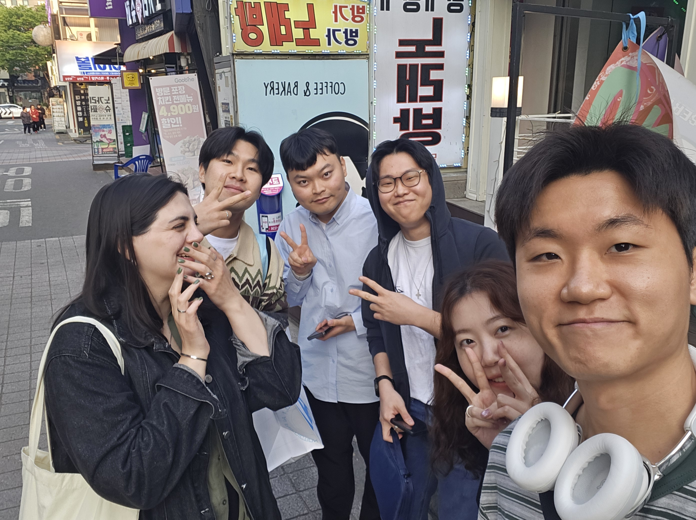
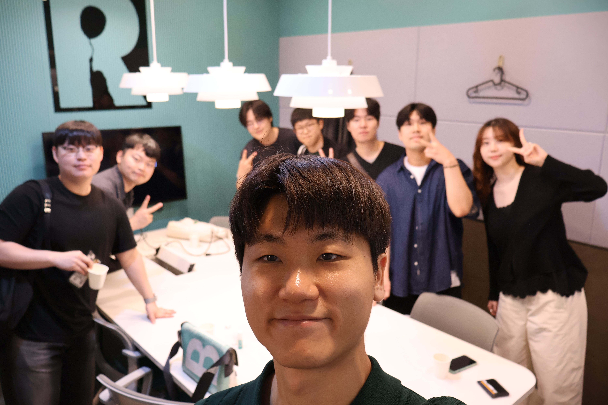
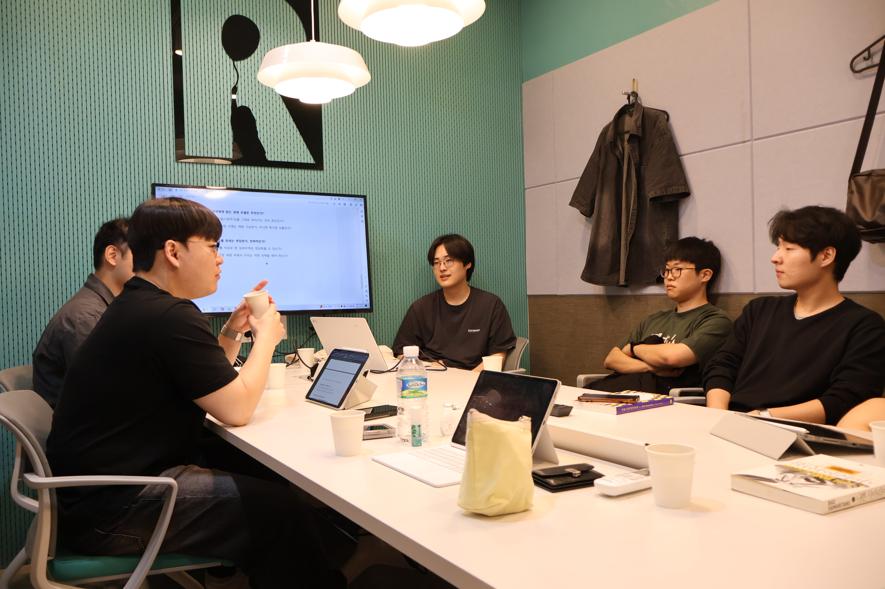
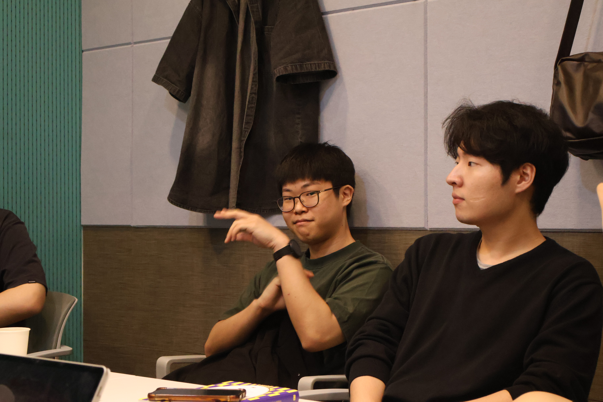
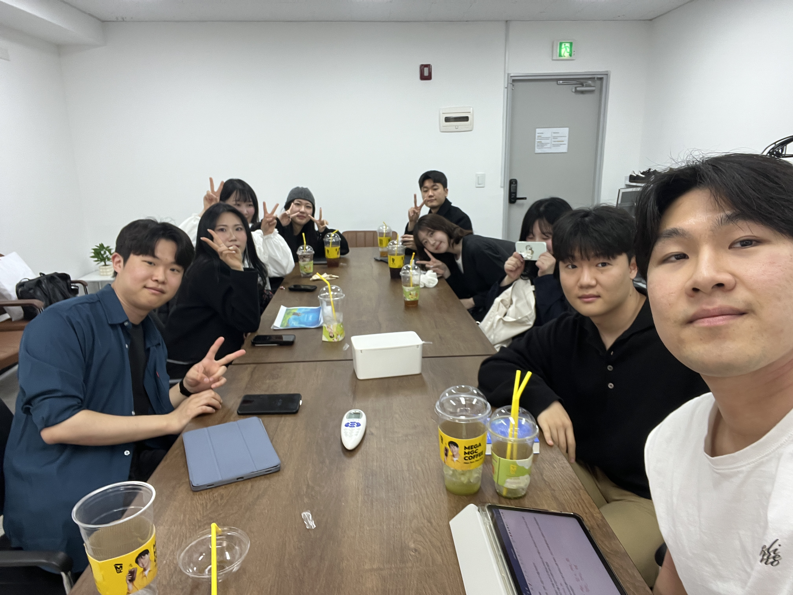

The Time of Margin
바쁜 일상 속, 잠시 멈추어 서는 시간
책과 사람 그리고 이야기가 머무는 곳 '여백의 시간'입니다.
바쁜 일상 속, 잠시 멈추어 서는 시간
책과 사람 그리고 이야기가 머무는 곳 '여백의 시간'입니다.
빨리 읽기보다 깊이 읽기를 지향합니다. 한 페이지를 읽더라도 나만의 문장을 찾는 시간을 소중히 합니다.
나와 다른 해석을 환대합니다. 정답이 없는 대화 속에서 우리의 세계는 더욱 넓어집니다.
휘발되는 대화가 아닌, 기록으로 남는 사유를 지향합니다. 우리의 여백은 기록으로 채워집니다.
모든 모임은 정해진 도서를 완독하고 참여하는 것을 원칙으로 합니다.
타인의 의견에 비난이 아닌 '질문'으로 화답하며, 서로의 취향을 존중합니다.
모임 후에는 짧은 한 줄이라도 본인의 생각이나 인상 깊었던 문장을 기록으로 남깁니다.
무단 불참 2회 시, 원활한 모임 운영을 위해 다음 분기 참여가 제한될 수 있습니다.
Click a year to view past meetups
우리가 함께 쌓아온 사유의 기록들
Total Books
0권
Meetings
0회
Members
17명
"우리는 주로 삶의 본질을 다루는 문학에 깊은 애정을 보입니다. 텍스트 너머의 여백을 찾는 시간을 통해 서로의 취향을 공유하고 있습니다."
여백을 채워가는 우리의 시간들







